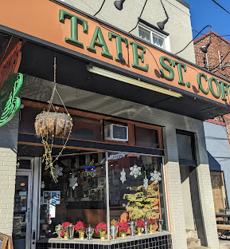

Tate Street Coffee House
344 Tate st · Sandwiches & Coffee
small coffee shop, good setting to study in

Avocado Breakfast Bagel — Creamy and filling before class.

Chicken Pesto Panini — Hot, melty, and fast.

Iced Caramel Latte — Sweet but balanced.